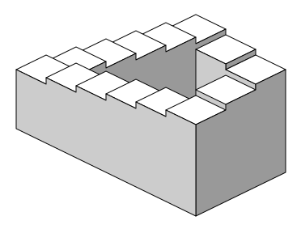

1925
初演
《Wozzeck》第3幕 第4場
Alban Berg — ベルリン国立歌劇場 初演
溺死する主人公の周囲で、どこまでも沈んでいく音響が意図的に書かれていた。シェパードが錯覚を論文化する40年前に、作曲家が経験則として同じ構造を掴んでいた例。
Auditory Illusion / 知覚・錯覚
同じ場所をまわり続けているのに、どこまでも高く登っていくように聞こえる音。シェパードトーンは、耳が嘘をついているのではなく、脳の「高さを測る仕組み」そのものの輪郭を見せてくる。
ロジャー・シェパードが「相対音高の判断における円環性」と題する論文を米国音響学会誌に発表し、終わらずに上昇する音の錯覚を初めて系統的に示した。
同年10月、東京オリンピックが開幕し、直前の10月1日には東海道新幹線が開業している。
1964年の論文は「ピッチ(音の高さ)は一直線の量ではない」という主張を、実際に聞ける形で提示した。図は螺旋、聞こえ方は円環。後年の認知科学の道具箱が、この小さな論文のなかに入っていた。
街のターミナルで、上りのエスカレーターに乗る。足もとは確かに動いていて、景色も流れているのに、目を閉じて数秒がたつと、自分が登っているのか建物ごと沈んでいるのか分からなくなる瞬間がある。
「動きが続いている」という感覚は、外の世界の絶対量ではなく、直前との差分で計算されている。だから差分が同じ方向に揃い続けるだけで、脳は「どこまでも進んでいる」と判断する。
音の高さでも、同じことが起きる。
ある音を実際に耳で聴きながら、脳が「音の高さ」をどう組み立てているかを覗く。目で見たときに感じる違和感と、耳で感じる"終わらなさ"の間に、共通の仕掛けがある。
ピアノの鍵盤を一番左から右まで弾いていくと、音は低いところから高いところへ一直線に上っていく。私たちはふだん、音の高さをそういう連続した直線として扱っている。低い、高い、その間。終わらない尺度の上に点がひとつ置かれる。
ところが、同じ鍵盤でド、ド、ド、ドとオクターブを越えながら弾いていくと、違う感覚が滑り込んでくる。どのドオクターブ周波数が2倍になるごとに同じ「音名」が戻ってくる関係。440Hzと880Hzはどちらも「ラ」と呼ばれる。人間の聴覚は周波数が2倍になった音を"同じ音の高い版"として受け取る。も、たしかに高さが違う。だけど同時に、どれも「同じ音」でもある。高さが違うのに、同じだ。この二重性は、鍵盤の上の「左右の位置」だけでは説明できない。
ピッチは「高さ(直線の軸)」と「音名(円環の軸)」の二重構造を持つ。直線だけで捉えるとオクターブ関係が見えず、円環だけで捉えると高さの感覚が消える。両方を掛け合わせた3D螺旋が、シェパードの描いたピッチ空間。
1964年、ベル研究所の認知心理学者 ロジャー・シェパード は、この二重性を一つの図にまとめた。音の高さを縦の軸、音名(C, C#, D, …, B)を円環の軸として、両者をかけあわせた螺旋に置いたのだ。論文は米国音響学会誌 (JASAJASAJournal of the Acoustical Society of America。1929年創刊の、音響学の国際的な中核ジャーナル。物理音響・音声・楽器音響・聴覚科学など、音に関わる論文の一次情報源として50年以上機能している。) に掲載された。螺旋を一周すると、一段高いところに戻ってくる。違う場所だが、方位は同じ。違う高さだが、音名は同じ。
Roger N. Shepard (1929–2022)
ベル研究所 → スタンフォード大学 認知科学者
スタンフォードで生まれ育ち、Yaleで博士号取得(1955)。ベル研究所(1958–66)在籍中にシェパードトーンの1964年論文を発表。ハーバード(1966–68)を経てスタンフォード(1968–96)へ。メンタルローテーション実験(1971)や多次元尺度構成法でも知られ、1995年に米国科学賞を受賞。空間的・心的な回転を「錯覚を聞かせながら証明する」のが彼のスタイルだった。
シェパードはこの螺旋を、論文の一節で エッシャーの無限階段Escher's infinite staircaseオランダの版画家 M.C. エッシャー (1898-1972) が1960年の作品《上昇と下降》で描いた、登り続けても元の場所に戻ってくる不可能図形。元はペンローズ父子が1959年の論文で提示した「ペンローズの階段」で、エッシャーがそれを版画作品に落とし込んだ。になぞらえた。階段は一段ずつ昇っていくのに、一周すると同じ踊り場に戻ってくる。局所的には登り続け、大域的には閉じている。

同じ錯覚の視覚版
どの段も一段高いのに、四角く一周すると同じ高さに戻ってくる。シェパードトーンはこれの聴覚版だ。
Impossible staircase — Sakurambo / Wikimedia Commons (Public Domain)
音の高さも、そうありうる。問いはすぐに、反転する。もし局所的な「上がった」だけを与え続けて、大域的な帰着を隠したら、耳は何を聞くか。
その答えは、5年後、ベル研究所Bell Labs米 AT&T 系列の研究機関(1925-)。電話・通信から出発し、トランジスタ(1947)、レーザー、UNIX、C言語、情報理論(シャノン)など20世紀後半の基盤技術を大量に生んだ研究所。60年代末にはマックス・マシューズらが世界最初期のコンピュータ音楽プログラムを開発していた。の グリッサンドglissandoひとつの音からもう一つの音へ、不連続な「ステップ」ではなく、なめらかに周波数を動かして渡る奏法。トロンボーンや弦楽器でしばしば聞く、「ずるずると音程が変わる」あれ。のなかで実装された。フランスの作曲家 ジャン=クロード・リッセ が、シェパードの離散的な音階を連続な滑らかさに変え、切れ目のない「永遠の上昇」を鳴らしたのだ。
Jean-Claude Risset (1938–2016)
フランス 作曲家・音響研究者
1960年代末にベル研究所で M. マシューズらと働き、コンピュータ音楽の先駆けを作った一人。シェパードの離散スケールを連続版に変え、やがて《Mutations》(1969) や《Little Boy》の Computer Suite で作品に組み込んだ。音色の合成そのものを科学にした世代。
"The tones can be represented as equally spaced points around a circle, such that the clockwise neighbor of each tone is judged higher in pitch while the counterclockwise neighbor is judged lower."
「これらの音は、円周上の等間隔な点として表すことができる。時計回りの隣は"高い"と、反時計回りの隣は"低い"と判定されるように。」
— Roger N. Shepard, Circularity in Judgments of Relative Pitch, JASA, 1964
こうして設計された音を聴いた人は、口を揃えて「どこまでも上がっていく」と報告した。それが何秒続こうが、音が実際に上限に達することはなかった。ここで先回りして、よくある誤解を三つだけ片付けておきたい。それぞれの思い込みを外した方が、このあと実際に音を聞くときの耳が自由になる。
誤解 1
シェパードトーンは、本当に周波数が上がり続けている音。
実際
音源が再生しているのは、同じパターンを繰り返すループ。全体の平均周波数は一定のまま変わらない。
誤解 2
耳が疲れて、高さの感覚が鈍っているから起きる錯覚。
実際
耳そのものは正直で、届いた振動の成分は物理的に正しく分析されている。錯覚は、その後の「高さの推定」処理で起きている。
誤解 3
訓練された音楽家なら気づけるから、素人だけの錯覚。
実際
絶対音感を持つ聴き手でも、成分の配置が巧妙にされた場合は「上がり続けている」と感じる。知覚の段階の現象で、知識では上書きしにくい。
つまり、騙されているのは耳ではなく、音をどう組み立てるかという脳の規則の方だ。そしてその規則は、知識で切り替えられる種類のものではない。ここから先、文字だけで読んでもあまり意味がないセクションに入る。音を鳴らして、実際に聞いてみてほしい。
ここからは、耳で確かめてほしい。下のプレイヤーは、シェパードトーンをブラウザ上で合成して再生する。イヤホンかスピーカーがあると差がよく分かる。最初は小さな音量にして、「再生」を押してから音量スライダーで調整してほしい。
左端の「再生」ボタンで音が始まる。モードを切り替えることで、同じ仕掛けを内側から確認できるようにしてある。3つの正しい動作を先に書いておく:
上昇モードで30秒〜1分聞いたあと、単音モードに切り替えてみてほしい。片方は永遠、片方は有限。同じ平均周波数帯を使っていても、聞こえ方はまったく違う。
音は、物理的にはどこにも上がっていない。同じパターンをループしているだけだ。それなのに、あなたの耳には永遠に上がり続けるように聞こえる。— そのズレを、自分の耳で確かめるのがここの目的だ。
横軸 = 周波数(対数) / 縦軸 = 振幅。赤い棒と点が再生中の各サイン波成分。ガウス(釣鐘型)の内側が大きく聞こえ、外に出た成分は消える。
聞き方のコツ 上昇モードは30秒以上聞くと効いてくる。プツプツという小さなノイズが混じることがあるが、これはブラウザ内で正弦波を合成するときの副産物で、現象そのものとは別物。音量は最初は小さめで、慣れてから上げてほしい。
聞きながら、可視化(上のキャンバス)を眺めてほしい。赤い点が左から右へじわじわと移動し、右端(高い側)でフェードアウトしながら、ほぼ同時に左端(低い側)から新しい点がフェードインしてくる。点全体は右に流れ続けているが、分布そのものはずっと同じ釣鐘型にとどまっている。流れているのは成分で、留まっているのは風景だ。
シェパードトーンは、1本のサイン波sine wave純粋な単一周波数の、混じりけのない波形。どんな複雑な音も、数学的にはサイン波の足し合わせに分解できる(フーリエ分解)。シンセサイザーの最も基本的な素材。ではなく、複数のサイン波を1オクターブ間隔で重ねたものでできている。ある成分が 220Hz なら、その上に 440Hz、880Hz、1760Hz、3520Hz …と、倍々に周波数を上げた成分を同時に鳴らす。どれも同じ「音名」を指しているので、聴覚はこの束を「一つの音」として受け取る。
中央(耳が一番敏感な領域)に音量のピークを置き、両端(低すぎ・高すぎ)で音をほぼ消す釣鐘型の重みづけ。これが「シェパードトーン」の本体。
ただオクターブで重ねただけでは、錯覚は起きない。鍵は、それぞれのサイン波の音量を、釣鐘型のカーブで重みづけすることにある。中央の周波数に近い成分はしっかり鳴らし、極端に低い成分と極端に高い成分はほとんど聞こえない音量にまで落とす。これがシェパードが「ガウス・エンベロープGaussian envelope中央が高く、両端に向かって裾野が滑らかに下がる釣鐘型の関数。「中央近くは大きく、端は小さく」という重みづけを自然な形で与えられる。統計学の正規分布と同じ形。」と呼んだ仕掛けだ。
ここから本題。全体の周波数を少しずつ上にずらしていく。8本のサイン波が、それぞれ手をつないだまま右にスライドするように、同じ比率で上がっていく。このとき、一番上の成分は可聴域を超えて消えていき、同時に、一番下に新しい成分がそっと加わる。釣鐘の形は動かない。動いているのは、釣鐘の中を右に抜けていく成分たちだ。
各サイン波は個別には「有限の時間だけ鳴って消える」が、入れ替わりが滑らかなので、全体としては終わらない上昇に聞こえる。
ここが決定的だ。聴覚は、個々のサイン波の「この一本が終わった」を追うのではなく、釣鐘の中で動いている全体のパターンを「今の音の高さ」として受け取る。そのパターンは、止まることなく上にスライドしている。だから耳は「ずっと上がっている」と報告する。リセットは、脳には届かない。
ステップで追う
低い A(55Hz)から、倍々に周波数を上げたサイン波を 7〜8本 重ねる。どれも同じ「音名 A」で、違うオクターブ。耳はこの束をひとつの「音」として扱う。
各成分の音量に ガウス・エンベロープを掛ける。中央の周波数(耳が一番敏感な 500〜2000Hz あたり)に近い成分は大きく、両端の成分はほぼ無音に。ここで「音に始まりも終わりもない」という印象の土台ができる。
時間とともに、すべての成分の周波数を同じ比率で上に動かす(対数スケール上で等速に)。釣鐘のカーブ自体は動かさない。上端に達した成分は、そのまま釣鐘の裾で音量が落ちていき、消える。下端から、同時に新しい成分が加わる。
各成分が 1 オクターブ分動くと、元の配置に完全に戻る。つまり全体は周期 1 オクターブでループしている。物理的には閉じた円。しかし局所的に「今、上がっている」という差分だけを耳に見せるので、主観には終わりがない。
耳は正直だ。入ってきた振動のスペクトルを、ちゃんと成分ごとに分解している(蝸牛がする仕事)。錯覚はその先、「このスペクトルの代表値はどこか」を決めようとするときに起きる。代表値をひとつに絞ろうとすると、ガウスの中央が答えの候補になる。その中央が、わずかに上へ動き続ける。脳はその動きを、そのまま「上がり続けている音」と報告する。
具体的な音楽・映画・ゲームでの使用例は このあとのカタログ にまとめる。ここでは 科学がこの現象を掴んで手放さなかった百年 を辿る。芸術家の経験則が先にあり、研究者が名前を付け、別の作曲家がそれを連続化し、さらに半世紀後に情動との関連まで実証される。
1925
Alban Berg《Wozzeck》第3幕 第4場 — 前史
ベルリン国立歌劇場で初演された《Wozzeck》。溺死する主人公の周囲に どこまでも沈んでいく 音響が書かれていた。科学が現象に名前を付ける40年前から、作曲家はその構造を経験則として使っていた。
1964
Shepard『相対音高の判断における円環性』
当時ベル研究所にいた Roger Shepard が、米国音響学会誌(JASA)に論文を発表。ピッチは直線ではなく螺旋(高さ × 音名の二重構造)であり、螺旋に沿って回すだけで「永遠に上がる」音が作れる、と示した。ここで錯覚が名前を得た。
1969
Risset の連続版(Shepard-Risset glissando)
ベル研究所の Jean-Claude Risset が、離散的な音階ではなく、なめらかに滑りつづける連続版をコンピュータ合成で実装。論文《Pitch Control and Pitch Paradoxes Demonstrated with Computer-Synthesized Sounds》として JASA に発表。ここで「終わらないグリッサンド」という新しい音色が生まれた。
2016
Copelli ら — 情動反応・平衡感覚との関連を実証
《Frontiers in Psychology》誌に、シェパード=リッセ・グリッサンドが聴き手の情動反応や平衡感覚に有意な影響を与えることを実証した論文が掲載される。錯覚は半世紀を経ても、同じようにヒトを揺らしつづけることが確認された。
シェパードトーンが強く使われる場面には、いつも共通点がある。答えを遅らせたい場面だ。ホラーの追い詰められる場面、ゲームの終わらない階段、戦争映画の「まだ脱出できない」一時間。音楽的な「解決(解放)」を、構造的に先延ばしできる。だから耳は「もう少し、もう少し」と待たされ続ける。
映画全体がひとつのシェパード構造になるように、スコアがタイムライン構造そのものを映している。
"It's the idea of eternity and endlessness. The idea of playing a trick on time itself. Nobody had done what we ultimately did, and I kept thinking, halfway through the movie, 'I know why nobody has done it before — because it's sort of impossible.'"
「永遠と、終わりのなさ。時間そのものに仕掛けるトリック、という発想なんだ。誰も我々がやったことをやらなかった。映画の途中で何度も思ったよ、"誰もこれをやらなかった理由が分かった。ほとんど不可能なんだ" と。」
— Hans Zimmer, 《Dunkirk》のシェパードトーン使用について (CBC Radio Q, 2017)
この「到達しない」は、音に限らない。スクロールしても下端が来ないフィード。レベルが上がり続ける RPG。数字が増えつづけるダッシュボード。どれも、差分の方向さえ揃えておけば、終点は隠せることを知っている設計だ。シェパードが1964年に見せたのは、単なる音の錯覚ではなく、「終わらなさを人工的に作る方法」の骨格だったのかもしれない。
では、この100年のあいだに、どこでこの錯覚は実際に使われてきたのか。作曲家・映画監督・ゲーム音楽家が独立に、あるいは影響を受けて採用してきた13の具体例を、次に並べる。
Catalog — Where you've already heard it
1925年から2018年までの約100年間、研究者・作曲家・映画監督・ゲーム音楽家が、独立にあるいは影響を受けて、同じ錯覚を使ってきた。一次情報で確認できる13作品を古い順に。★印は「そうだったのか」と言われがちな使い方。
Alban Berg — ベルリン国立歌劇場 初演
溺死する主人公の周囲で、どこまでも沈んでいく音響が意図的に書かれていた。シェパードが錯覚を論文化する40年前に、作曲家が経験則として同じ構造を掴んでいた例。
The Beatles — アルバム Magical Mystery Tour
曲終盤のアウトロで、上昇感のあるストリングスとオーケストラが重ねられる。編曲はジョージ・マーティン。シェパードトーン的な仕掛けをポップスに持ち込んだ、最も早い一般的な例のひとつ。
James Tenney — ベル研究所で制作
Shepard 本人と同じベル研究所にいた作曲家の電子音楽作品。12〜15本の正弦波が順にフェードインしながら小六度ずつ低い位置に連なるグリッサンド。シェパード=リッセ連続版の最初期の応用例。
Jean-Claude Risset — ベル研究所
リッセ自身が連続版シェパードトーンを組み込んだ最初の作品群。《Little Boy》では原爆投下を扱う文脈で、どこまでも下降するグリッサンドが象徴的に使われる。
Pink Floyd — アルバム Meddle
23分の大曲の終盤、上昇を繰り返すオルガン音が重ねられる部分にシェパードトーン系の構造が指摘されている。プログレッシブ・ロックの「時間感覚を歪ませる」演出として採用された初期例。
Queen — アルバム A Day at the Races
ブライアン・メイが、ハーモニウムの下降スケールを録音し逆再生することで作った約1分間のシェパードトーン・イントロ。同アルバムの終曲《Teo Torriatte》でもリプライズされ、アルバム全体を「音の円環」として閉じる設計。メイ本人は「never-ending staircase」と呼んだ。
任天堂 / 作曲 近藤浩治
スターを70個集めていないプレイヤーが最終面への階段に立ったときに流れる短いループ。下降しつづけるシェパードトーン系の旋律で、「まだ戻らねばならない」感覚をBGMの骨格から支える。ライゲティ《悪魔の階段》とシェパードトーンを併せて参照したと近藤は語っている。
監督 Christopher Nolan / 作曲 David Julyan
多くの観客が《Dunkirk》を「ノーラン初」と記憶しているが、実際に最初にシェパードトーンをスコアへ組み込んだのはこの作品。上昇音がスコア全体に散りばめられ、手品師同士の永遠の競争を音で支える。
監督 Nolan / 作曲 Hans Zimmer & James Newton Howard
スコアではなく、効果音として採用された稀な例。バットマンが乗るバイク「バットポッド」の加速音に、シェパードトーンが仕込まれている。観客には「永遠に加速している」ように聞こえる。
監督 Nolan / 作曲 Hans Zimmer
宇宙と時間そのものを主題にした映画に再びシェパードトーン的構造が。巨大パイプオルガンを核にしたスコアに上昇音が織り込まれ、ブラックホールで時間が引き延ばされる体感を支える。
監督 Nolan / 作曲 Hans Zimmer
ノーランが脚本段階からシェパードトーンを織り込み、Zimmer が「海岸の1週間 / 船の1日 / 空の1時間」の3つの時間スケールを、それぞれ独立したシェパード音階として並走させる。映画全体がひとつのシェパード構造に。
監督 Lucrecia Martel / 音響 Guido Berenblum
アルゼンチン植民地時代を舞台にした作品。下降型のシェパードトーンを劇中3回、主人公の精神崩壊のシーンで使用。監督は「burbuja(泡)」と呼び、ノーラン&Zimmer と同年に、まったく独立に同じ技法に辿り着いた。
Franz Ferdinand — アルバム Always Ascending タイトル曲
曲のほぼ全体を通してシェパードトーンが上昇しつづける、文字通り「常に上昇する」楽曲。アルバム名そのものが宣言。ポップスで構造を骨格まで借りた、もっとも純粋な応用例。
Circularity in Judgments of Relative Pitch
シェパードトーンの原著。ピッチ知覚が「高さ」と「音名」の二重構造を持つことを実験で示し、螺旋モデルを導入した。
Pitch Control and Pitch Paradoxes Demonstrated with Computer-Synthesized Sounds
離散的なシェパード音階を連続な glissando として合成・発表。以後の電子音楽における定番技法となる。
シェパード=リッセの連続版が聴き手に与える情動反応と平衡感覚への影響を実証的に調べた論文。「不安感」との相関に言及。
Hans Zimmer explains the audio trickery that made Dunkirk audiences nauseous
Zimmer 自身が《Dunkirk》のシェパードトーン使用について語っている。「時間そのものを騙す」という設計意図が詳しい。
Shepard Tones and Production of Meaning in Recent Films: Martel's Zama and Nolan's Dunkirk
現代映画におけるシェパードトーンの使用を、ノーラン作品と Lucrecia Martel 作品を例に分析した論考。
e. Tamaki